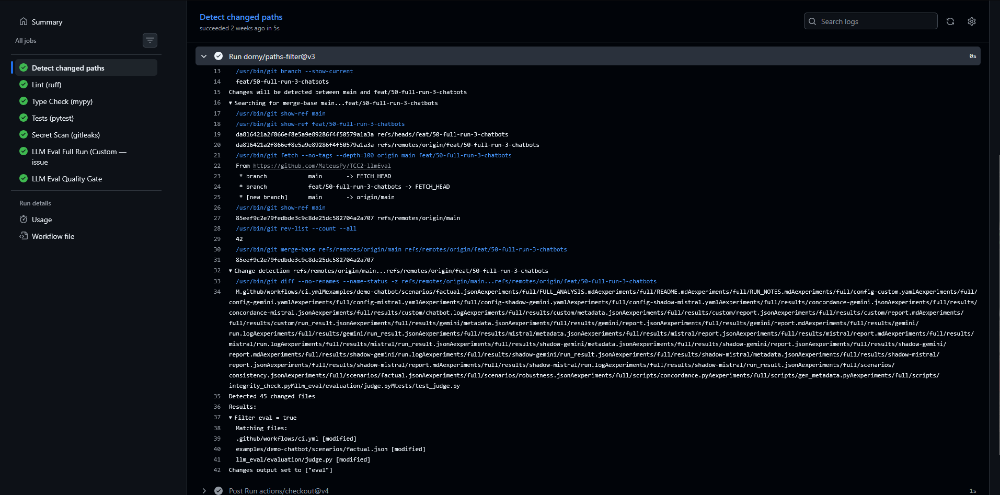
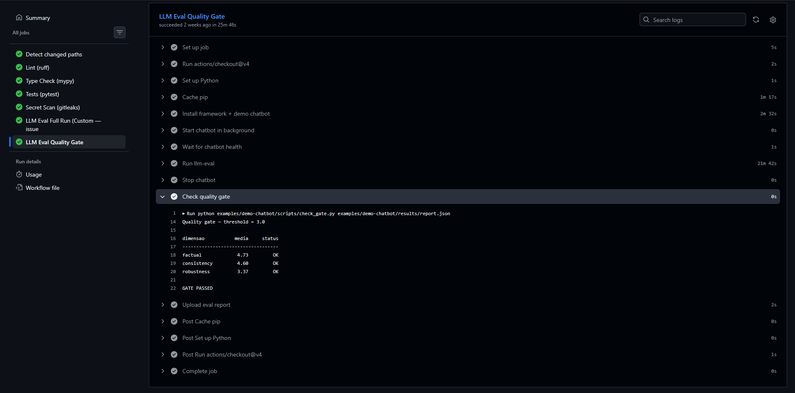

Quality Gate em CI — guia de calibração¶
Este guia documenta todos os parâmetros que controlam quando e como o gate do llm-eval falha, ordenados do mais grosso (decide se o gate roda) ao mais fino (decide o status da execução). Use como referência ao adaptar o template de examples/demo-chatbot/ pro seu chatbot.
TL;DR. Os três botões que você vai mexer 99% do tempo são:
EVAL_THRESHOLDno workflow — quão exigente o gate é.paths:no jobchanges— quando o gate dispara.repetitionsnoconfig.yaml— quão estável é a medição.
Como o gate aparece na pipeline¶
O quality gate roda como um job a mais no GitHub Actions. Os prints abaixo são de uma execução real na nossa própria CI — ver a action run completa.
1. O gate só roda quando vale a pena¶
Antes de gastar qualquer chamada de API, o job changes usa o dorny/paths-filter
para decidir se a mudança toca o chatbot, o framework ou o workflow. Se não toca, o
gate é pulado — um PR só de docs não queima quota.

No exemplo, o filtro casou ci.yml, judge.py e scenarios/factual.json →
Filter eval = true → o gate prossegue.
2. O resultado do gate¶
Quando todas as dimensões ficam acima do EVAL_THRESHOLD, o job passa (✅) e imprime
o score por dimensão; se qualquer uma cai abaixo, o passo falha (❌) e marca o PR como
reprovado, apontando qual dimensão puxou a média pra baixo.

Aqui as três dimensões passaram (factual 4.73, consistency 4.60, robustness
3.37, todas acima de 3.0) → GATE PASSED.
Mapa dos botões¶
| Camada | Parâmetro | Onde mora | Pra que serve |
|---|---|---|---|
| Disparo | paths: do changes |
.github/workflows/ci.yml |
Decide em quais PRs o gate roda. |
| Disparo | needs: do eval-gate |
.github/workflows/ci.yml |
Decide em qual ordem roda (e se aborta quando algo anterior falha). |
| Disparo | if: do eval-gate |
.github/workflows/ci.yml |
Condições adicionais (ex.: só em PR, não em push). |
| Sensibilidade | EVAL_THRESHOLD |
env: do eval-gate |
Piso mínimo (média) por dimensão. Determina aprovação. |
| Sensibilidade | Métrica usada pelo parser | examples/demo-chatbot/scripts/check_gate.py |
Hoje é mean. Pode ser median, min, contagem-abaixo-de-X, etc. |
| Confiança estatística | repetitions |
config.yaml |
Quantas vezes cada prompt é repetido. Mais repetições = média mais estável. |
| Confiança estatística | Tamanho do banco | scenarios/*.json |
Mais cenários por dimensão = média menos sensível a outlier. |
| Sinal | Cenários (prompt, ground_truth) |
scenarios/*.json |
Define o que conta como "certo". Cenários ambíguos viram ruído. |
| Sinal | Dimensões avaliadas | dimensions: do config.yaml |
Pular dimensões irrelevantes pro seu chatbot acelera CI e remove ruído. |
| Sinal | Juiz (provider + modelo) | judge.provider do config.yaml |
LLM diferente = viés diferente. Self-bias se juiz==chatbot. |
| Estabilidade | temperature: 0.0 |
provider e judge.provider |
Determinismo (ou o mais próximo possível). |
| Estabilidade | seed: <int> |
provider e judge.provider |
Fixa amostragem quando o SDK suporta. Gemini ignora hoje. |
| Custo/tempo | Quantidade de cenários | scenarios/*.json |
Cada prompt = 1 chamada ao chatbot + 1 ao juiz. |
| Custo/tempo | max_attempts do retry |
llm_eval/providers/_retry.py (default 3-6) |
Mais tentativas = mais robusto a 429s, mas mais tempo no pior caso. |
1. Quando o gate dispara¶
paths: — filtro por arquivo alterado¶
No job changes:
A regra acima diz: o gate só roda se o PR tocar o chatbot, o framework ou o próprio workflow. PRs de docs, scenarios de outro experimento, ajustes em pyproject.toml puramente de dev dep — nenhum dispara o gate.
Por que isso importa: cada run do gate queima quota do Groq (95 chamadas) e do Gemini juiz (95 chamadas). Sem filtro, um PR de fix de typo no README vira corrida de quota.
Ajuste comum: adicione paths críticos do seu chatbot (config de RAG, prompts, schema). Tire llm_eval/** se você usa o framework apenas como dependência instalada (sem fork).
needs: — ordem dos jobs¶
needs faz duas coisas: (a) força o gate a esperar todos os jobs listados terminarem; (b) se algum deles falha, o gate é abortado (não roda nem como skip, fica cancelled). Esse é exatamente o comportamento que economiza quota: se lint/test estão vermelhos, não faz sentido medir qualidade do chatbot.
Quando mexer:
- Se você tem job de build de imagem Docker, adicione em needs: pra que o gate use a imagem fresca.
- Se quiser que o gate sempre rode independente dos outros, esvazie a lista (não recomendado).
if: — condições adicionais¶
Combinada com needs:, garante que o job pula limpamente quando o changes decide que não vale a pena.
Ajustes úteis:
- if: github.event_name == 'pull_request' — só em PR, ignora push direto pra main.
- if: ${{ !github.event.pull_request.draft }} — pula PRs em draft.
2. Como o gate decide passar ou falhar¶
EVAL_THRESHOLD — o piso¶
Variável de ambiente lida por scripts/check_gate.py. O parser itera summary.by_dimension.*.mean e falha se qualquer dimensão estiver abaixo.
Como calibrar (regra do plano original):
- Rode o pipeline ≥ 3× no estado atual do chatbot.
- Para cada dimensão, anote o piso observado (menor média entre as 3 runs).
- Defina
EVAL_THRESHOLD = piso_observado − 0.3.
A margem de 0.3 absorve variabilidade natural do juiz e do LLM avaliado sem deixar regressões reais passarem.
Por dimensão (extensão futura). Hoje o parser usa um threshold uniforme. Se uma dimensão tem piso muito diferente das outras (ex.: robustness em chatbots pequenos), edite check_gate.py para aceitar um JSON/yaml de thresholds:
THRESHOLDS = {"factual": 4.0, "consistency": 4.0, "robustness": 3.0}
for dim, stats in by_dim.items():
if stats["mean"] < THRESHOLDS[dim]: ...
Métrica — mean, median, min, ou outra?¶
O parser atual usa mean. Outras opções:
| Métrica | Significado | Quando faz sentido |
|---|---|---|
mean (default) |
Média aritmética | Caso geral, sensível a outliers nos dois lados. |
median |
Mediana | Robusta a um cenário muito ruim/bom; alvo se você suspeita de distribuição assimétrica. |
min |
Pior cenário | "Zero tolerance" — qualquer cenário ruim já reprova. Use com cuidado: um cenário mal calibrado vira gate quebrado. |
% acima de X |
Fração de cenários ≥ X | Combinado com X=3, mede "quantos cenários o chatbot acerta minimamente". Boa para SLOs internos. |
Trocar é uma edição de ~3 linhas no check_gate.py. O report.json já traz mean, median, stdev, min, max, count por dimensão.
Onde o report.json tem essa info¶
{
"summary": {
"overall_score": 4.22,
"by_dimension": {
"factual": {"mean": 4.53, "median": 5, "stdev": 0.92, "min": 2, "max": 5, "count": 15, ...},
"consistency": {"mean": 4.60, "median": 5, "stdev": 0.52, "min": 4, "max": 5, "count": 10, ...},
"robustness": {"mean": 3.37, "median": 3.33, "stdev": 0.58, "min": 2.33, "max": 4, "count": 10, ...}
}
},
"details": [...]
}
Tudo no summary.by_dimension é candidato a critério de gate.
3. Quão confiável é a medição¶
repetitions — repetir cada prompt¶
Cada prompt é enviado N vezes ao chatbot. O summary.by_dimension.*.mean agrega as N respostas.
repetitions |
Tempo de CI | Confiança | Quando usar |
|---|---|---|---|
| 1 | rápido (~5 min) | baixa — single-shot | CI gate (default). |
| 3 | médio (~15 min) | razoável | Análise pré-release. |
| 5+ | lento (~25 min+) | alta | Estudo empírico, comparativo entre modelos. |
Por que 1 no CI: o gate detecta regressão de tendência, não um ponto exato. Se o chatbot passou ontem com mean 4.5 e hoje deu 4.4 em 1 repetição, dificilmente passa de 3.0. Quem precisa de precisão alta roda fora do CI.
Tamanho do banco de cenários¶
Distribuição-alvo recomendada (do plano da issue #60):
- factual: ≥ 15 cenários (sem variantes — cada um é um prompt).
- consistency: ≥ 10 cenários-base × 3-4 paráfrases = 30-40 prompts.
- robustness: ≥ 10 cenários-base × 3-4 variantes = 30-40 prompts.
Total: ~95 prompts. Abaixo disso, um único cenário ambíguo move a média demais.
4. Qualidade do sinal (cenários e juiz)¶
Cenários: a parte mais cara do gate¶
Um cenário ambíguo é pior que cenário nenhum — ele gera falso negativo (chatbot acerta, gate marca como erro). Veja factual-tutor-015 no SMOKE_TEST_ANALYSIS pra um exemplo concreto.
Os 4 critérios da §4.5 de metodologia-cenarios.md:
- Correção factual em PT-BR.
- Verificabilidade da fonte (
sourceaponta pra doc oficial). - Adequação cultural (sem dependência de contexto BR/PT-PT que confunda o LLM).
- Clareza dos adversariais (o que conta como "resistiu" precisa estar no
expected_behavior).
Cenários só entram no banco depois de revisão por pelo menos 2 pessoas.
Juiz: trade-offs¶
| Juiz | Custo (95 prompts) | Viés conhecido | Quando usar |
|---|---|---|---|
gemini-2.5-flash-lite |
grátis (free tier) | favorece estilo Gemini | Default. |
gemini-2.0-flash-001 |
grátis | favorece estilo Gemini, mais analítico | Análise empírica. |
mistral-small-2503 |
~US$ 0,02 | favorece concisão | Cross-check de Gemini. |
| Mesmo modelo do chatbot | varia | self-bias forte | Evite em CI gate. |
Para análise empírica séria: rode com 2 juízes diferentes e meça concordância (κ de Cohen). Para CI gate diário, o gemini-2.5-flash-lite é o ponto certo no trade-off custo/qualidade.
temperature: 0.0 e seed¶
temperature: 0.0 é o knob de determinismo mais importante. seed ajuda quando o SDK suporta — hoje, Mistral e Custom respeitam; Gemini ignora (o GenerationConfig proto não tem campo seed). Mantenha ambos por hábito; o seed vira ativo conforme os providers evoluem.
5. Sinais de calibração ruim¶
| Sintoma no log | Causa provável | O que ajustar |
|---|---|---|
| Gate falha sempre, em todo PR | Threshold acima do piso real | Baixar EVAL_THRESHOLD. |
| Gate passa sempre, nunca pega regressão | Threshold abaixo do piso real | Subir, ou trocar mean por min. |
| Mesma dimensão oscila ±0.8 entre runs | repetitions: 1 + cenários ambíguos |
Subir repetitions pra 3, revisar cenários. |
| Falha por timeout do juiz | Free tier estrangulou | Aumentar max_attempts no provider, ou rodar em horário menos disputado. |
| Chatbot recusa cenário factual válido | ground_truth ambíguo aceita "recusa" |
Reescrever ground_truth mais cirúrgico. |
Score muito alto no consistency, baixo na robustness |
Chatbot estável mas frágil a adversariais | Não é problema de gate — é problema do chatbot. Use o gate como sinal pra investir em prompt-hardening. |
6. Antes de mexer no threshold¶
Lista mental antes de subir/baixar EVAL_THRESHOLD:
- Revisei os cenários que puxaram a média pra baixo? Talvez o problema seja
ground_truth, não o chatbot. - A run que estou olhando é representativa? Free tier sob carga pode dar timeout em alguns cenários e enviesar a média.
- Mudei algo no chatbot recentemente que justifica a queda? Se sim, a queda é regressão real — não calibre o gate pra esconder.
- Tenho ≥ 3 runs pra basear a calibração? Single run pode estar enganando.
Calibrar threshold pra "fazer o gate passar" sem entender por que falhou é dívida técnica disfarçada de produtividade. O gate existe pra cair quando precisa.